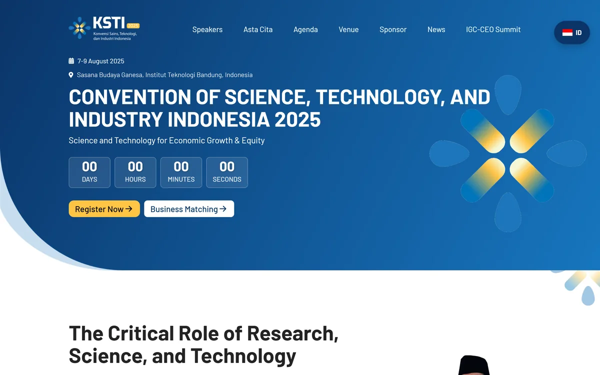
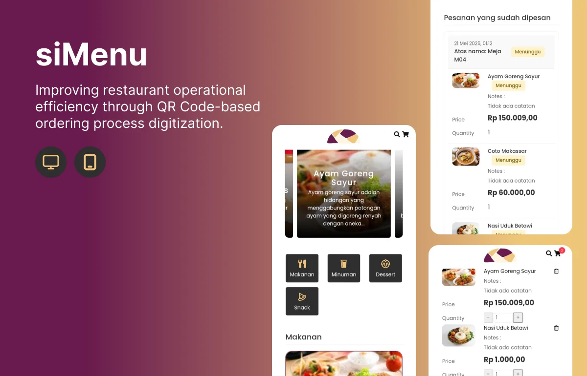
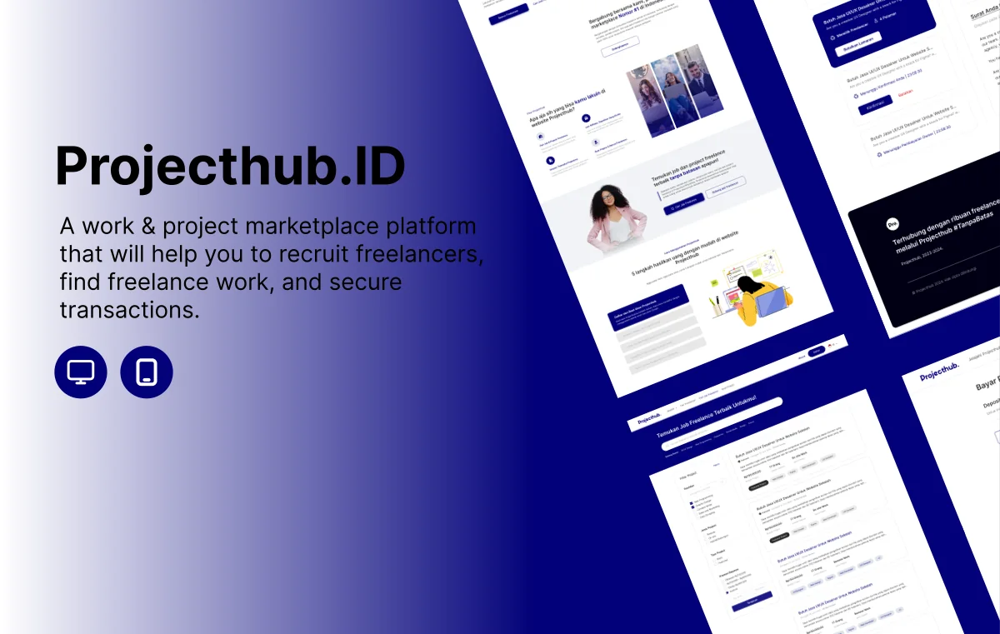
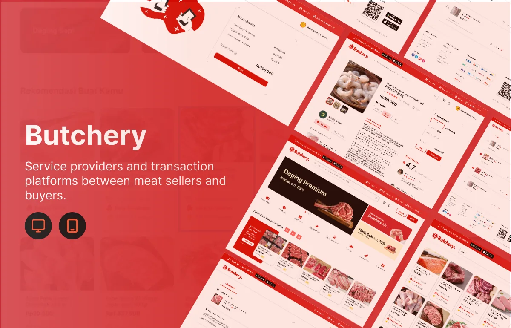

Peta Bima
Dasbor pemetaan riset nasional yang menghubungkan pernyataan masalah riset dengan delapan fokus Asta Cita. Kementerian memakainya sebagai acuan utama untuk melihat celah riset per wilayah, institusi, dan fokus.
Saya Ferrol. Halaman ini merangkum tujuh proyek yang pernah saya kerjakan: dasbor riset nasional, situs acara 7.000+ peserta, platform POS, sampai platform operasional dan marketplace.
01 / Indeks
Urutannya dari proyek pemerintahan dan riset, lalu produk operasional, blockchain, dan marketplace. Setiap catatan memuat konteks, peran, dan stack yang saya pakai.
Dasbor pemetaan riset nasional yang menghubungkan pernyataan masalah riset dengan delapan fokus Asta Cita. Kementerian memakainya sebagai acuan utama untuk melihat celah riset per wilayah, institusi, dan fokus.

Website resmi Konvensi Sains, Teknologi, dan Industri Indonesia. Mencakup pendaftaran, absensi, jadwal, dan informasi untuk 7.000+ peserta.

Platform pemesanan berbasis QR Code untuk restoran. Alurnya mencakup pesanan pelanggan, dapur, waiter, dan dashboard admin dalam satu sistem.

Platform ERP SaaS multi-tenant untuk perusahaan outsourcing. Perusahaan mengelola presensi dengan validasi lokasi, shift, cuti, work order, checklist, dan evaluasi; klien memantau operasional di lokasi mereka.
Sertifikat digital yang aman dan terverifikasi dengan teknologi blockchain. Proyek ini mencakup penerbitan, verifikasi, dan halaman publik untuk memeriksa keaslian sertifikat.

Platform marketplace kerja dan proyek yang membantu pengguna merekrut freelancer, mencari pekerjaan, dan mengamankan transaksi.

Platform layanan dan transaksi antara penjual dan pembeli daging. Mencakup katalog produk, keranjang, alamat pengiriman, dan pembayaran.
02 / Riset
Publikasi dan kompetisi yang menjadi bagian dari perjalanan kerja saya. Keduanya membantu saya menguji keputusan teknis di luar proyek klien.
Pengujian Black Box Testing pada Sistem Website Osha Snack: Pendekatan Teknik Boundary Value Analysis
Buka DOISistem Pengenalan Warna Berbasis OpenCV untuk Mendukung Aksesibilitas pada Individu dengan Buta Warna
Buka DOIMembangun Bisnis Digital melalui Project-Based Learning: Studi Pengembangan Website Pemesanan Online siMenu
Buka DOIPengembangan Sistem siMenu Menggunakan Metode Waterfall dengan Integrasi Kecerdasan Bisnis dalam Mendukung Keputusan Bisnis dan Efisiensi Layanan Restoran
Buka DOIAnalisis Efektivitas Aplikasi Drops dalam Meningkatkan Penguasaan Kosakata Bahasa Jepang pada Pemula
Buka DOISumber: CV, repositori kerja, dan catatan DOI publikasi.
03 / Kontak
Ceritakan konteks, lingkup, dan tenggat lewat email. Saya akan balas dengan langkah yang paling masuk akal.